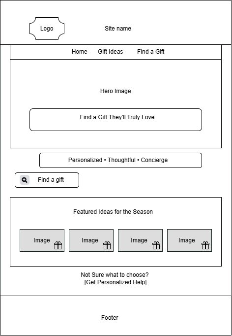
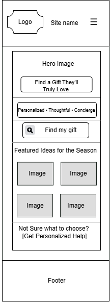

Site Name
Signature Gift Experts
This name was selected to emphasize the site's role as a trusted authority in thoughtful gifting. Rather than operating as a broad, traditional gift marketplace, Signature Gift Experts conveys a sense of specialization and discernment. The word "Signature" highlights the uniqueness and personal touch behind each recommendation, while "Experts" reinforces the curated, knowledgeable guidance the site provides. Together, the name communicates a purposeful focus on helping users discover meaningful, well-considered gift ideas tailored to each person and occasion.
Possible domain: signaturegiftexperts.com
Site Purpose
Signature Gift Experts is a personal gift concierge website designed to help customers find thoughtful gifts based on the recipient, occasion, interests, and budget.
Visitors will be able to browse curated gift ideas, view product information, explore seasonal recommendations, filter gifts by different categories, and submit a personalized gift request for additional assistance.
The website will not collect credit card information or process online payments. Instead, customers can submit their contact information and gift preferences to request recommendations, quotes, and availability.
Scenarios
The following questions represent common needs of visitors who may use the website.
- I need a birthday gift for someone who is difficult to shop for. How can I find something that matches their interests and my budget?
- I need a graduation gift soon, but I don't know what type of gift would be appropriate. What gift ideas are available?
- I know who I am shopping for and my budget, but I still need help choosing something personalized. Can I submit a gift request?
- Can I browse gift ideas by occasion, recipient, or price range?
Color Scheme
- Ivory (#fff9f5) - used as the main page background to create a light and welcoming appearance.
- Plum (#4a2c40) - used for headings, navigation, primary text, and the footer.
- Rose (#c98f9a) - used for buttons, borders, highlights, and decorative accents.
- Gold (#c8a96b) - used sparingly for decorative details, icons, and secondary accents.
Typography
Roboto Slab
Used for the site name, main headings, section headings, and product titles.
Thoughtful gifts, thoughtfully chosen.
Montserrat
Used for body text, navigation, buttons, forms, and product descriptions.
Find a meaningful gift for every person and occasion.
Planned Website Pages
- Home: Introduces Signature Gift Experts, explains the gift concierge service, and highlights seasonal and featured gift ideas.
- Gift Ideas:Displays gift ideas dynamically and allows visitors to filter gifts by occasion, recipient, and budget.
- Find a gift:Provides a form where visitors can describe the person they are shopping for, their occasion, interests, budget, and other preferences to request personalized recommendations.
Wireframes
Home Page Desktop View Wireframe

Home Page Mobile View Wireframe
